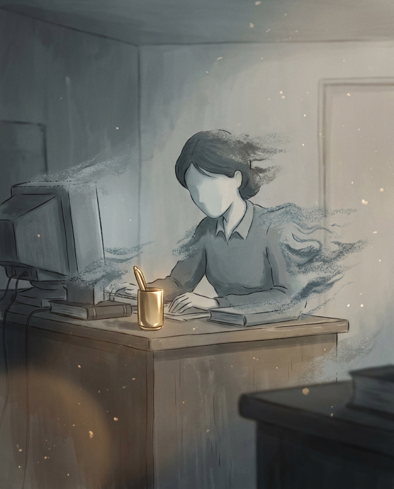
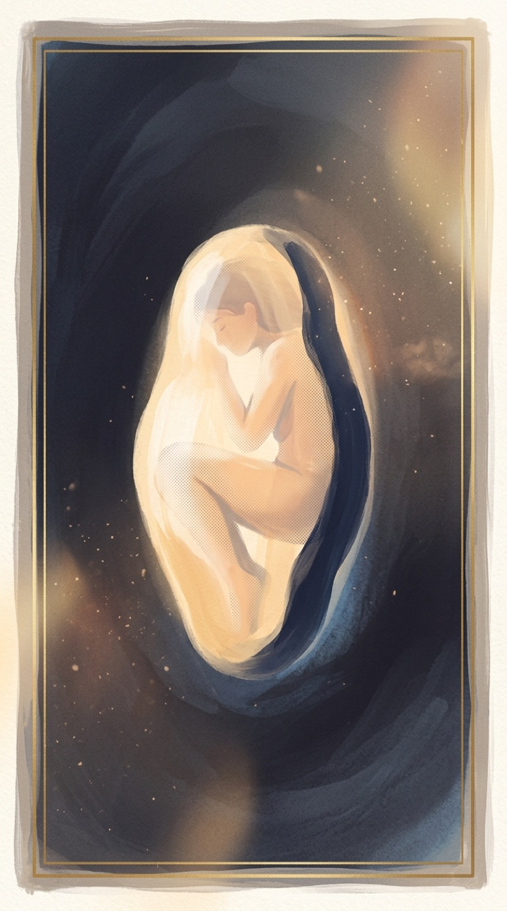
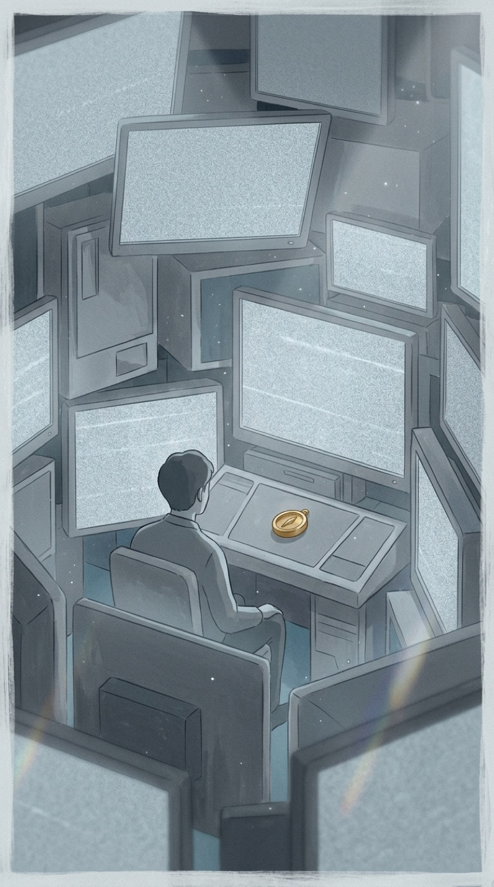
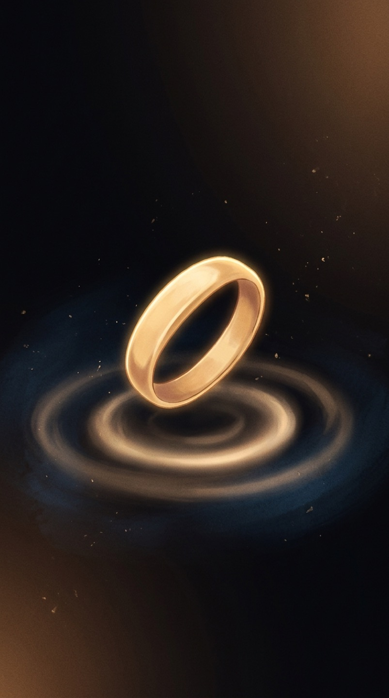
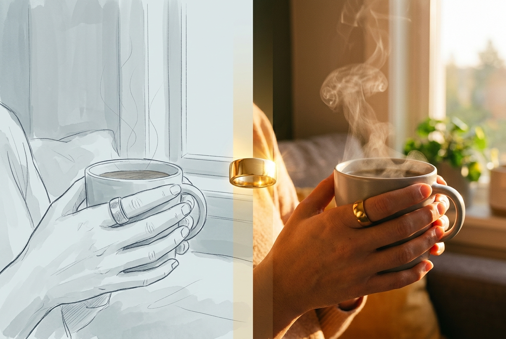

Strategy · Brand · Go-to-Market
Pulse
The Brand Strategy
Positioning · Value propositions · Key messaging –
one operating system the whole company can run on.
Joyce Chung
joycechung.com →
Positioning · Value propositions · Key messaging –
one operating system the whole company can run on.
Develop a forward-looking marketplace perspective the category hasn’t voiced.
Create a compelling, competitively differentiated point-of-view.
Reframe how the category is seen, in a way that inspires and serves our audience.



Phones pull. Notifications interrupt. Work demands urgency. Screens flood. Input never stops; output never ends. We move through the day with mind scattered, body tense, nervous system stuck on high alert.
The most dangerous part is how normal it starts to feel. By the time you think “I need a minute,” you are already tense, already reactive, already on autopilot – pulled away from your breath, your body, your natural ability to reset.
Not just burnout. Not just a busy life. Chronic overstimulation.
Technically functioning — but half “checked out” instead of fully here.
TIME reported that “overstimulated” has become a resonant term in culture because people use it to describe the feeling of too much happening at once: too much input, too much urgency, too much noise, too much screen, too many distractions coming at once.
A stressor fires the HPA axis (CRF → ACTH → cortisol) and the sympathetic “fight-or-flight” system in parallel. Sustained, this tips the autonomic balance toward chronic cortisol and adrenaline exposure.
Sensory over-responsivity drives the same fight-or-flight activation — even to ordinary stimuli. When sensory gating, the brain’s filter, is overwhelmed, sympathetic arousal climbs.
Always-on notifications raise cortisol and tax working memory. Each interruption leaves residue that compounds across the day.
to fully refocus after a single interruption.
Not “how do I feel less stressed?” But “how do I help my body come back down?”

A near-universal problem, met by tools that reach a narrow few —and lose even them inside two weeks.
Users skew older, educated, White, and female — not the mainstream.

High-functioning, highly activated – and already a believer in self-improvement.
Struggles with stress, distraction, phone habits, reactivity, shallow breathing, rushing, overthinking, and living on autopilot. Their problem is not lack of intention – life keeps pulling their body back into a state of urgency.
Achieving mindfulness isn’t top of mind. The immediate aim is to down-regulate the moment.
Meditation apps · Yoga · Journaling · Therapy · Breathwork · Productivity systems · Digital detoxes · Focus apps · Habit trackers · Somatic practices
The tools weren’t wrong. They just wait for intention — and intention is exactly what stress takes first.

Meditation helps, when you remember to open the app. Yoga grounds you, until the day takes over. Breathwork calms you, if you catch yourself in time.
These tools wait for intention. They ask for attention. They need the right room, the quiet moment, the free time that never comes. And the trackers arrive too late – scoring your sleep once you’re awake, measuring your stress once the moment has passed.
We don’t need another practice to perfect, or another metric to chase.
We need self-care that meets us where we already are — in the moment, in real life.

From a string around the finger to a knot in the handkerchief, humans have always used visible, tactile cues to interrupt autopilot and pull an intention back into the moment.
The object carries the memory when attention can’t.
The small physical signal that helps people take a pause.
A cultural moment: people who feel overstimulated, over-optimized, and digitally flooded want small, repeatable ways to feel calmer in real life.
A practical way to cue the body toward safety, softness, and reset throughout the day – without turning self-care into another optimization project.
Not a tracker, not a meditation app, not another notification device, not a smart ring. A cue that acts as a wearable nervous-system reset.
The dumbphone resurgence isn’t a mass movement – it’s a premium-priced, high-intent minority sacrificing convenience to reclaim attention. Not a trend to chase: Pulse’s buyer, already spending.
People are paying premium — and giving things up — just to break their own autopilot.
Ride the wave…
The vocabulary the culture is adopting for stress.
Recovery in seconds, not weekend retreats.
People are done being measured. They want to be helped.
Stress hormones went mainstream and searchable.
The backlash against one more app to manage.
Small deliberate gestures as identity, not chores.
Positioning is the ONE idea that sets you apart — creating a clear sense of choice and compelling people with busy lives and many options.
What sets the company apart, and the value it offers – decided once, used everywhere.
Messaging, marketing, visual identity, and customer experience all draw from the same intended perception.
In a crowded, distracted market, one sharp idea is what makes choosing easy.
What is the ONE idea that will grab the attention of a detached, reluctant marketplace?
Repositioned buying a Mac as a statement about who you are, not what specs you need.
• Killed the floppy drive
• No legacy ports
• Translucent blue
Attacked PCs as stuffy, virus-ridden, crashing, drowning in bloatware, setup pain, peripherals.
Ceded volume to protect margin and brand.
Apple never really sold against specific competitors. It sold against a category.
It demands your attention, your urgency, your reaction.

A small signal on the body that interrupts autopilot before it takes over.
Just a quiet reminder to return to yourself.
A cultural moment, a universal human problem, and an age-old behavior — newly designed for modern life.
Overstimulated, over-scheduled, over-optimized, and increasingly aware that stress lives in the body, not just the mind. The need is no longer abstract wellness; it is interrupting autopilot in real time.
Universal: most people don’t need more intention. They need a cue that reaches them in the moment, before stress, distraction, or reactivity takes over.
Ancient: strings around fingers, knots, beads, touchstones — physical reminders that carry intention when attention fails. Pulse modernizes the instinct into a subtle, wearable cue.

Put on Pulse and carry a quiet reminder with you. Subtle, lightweight, waterproof – made for the life you actually live, not the perfect conditions you never have.

When the pulse arrives, it cuts through the rush. The scroll. The tension. The moment you were about to abandon yourself.

Pause. Take one slow breath. Soften your shoulders. Unclench your jaw. Refocus on what is real, present, and in front of you.

One reset becomes another. Over time, calm stops being something you chase or schedule — and becomes something you know how to return to.
Pulse works because it does one thing at the exact moment people need it: It interrupts autopilot. It is the physical intervention. The app is where that intervention becomes intentional – where a user decides what they want to catch, shift, practice or change.
The app’s job is to help users define their moments of autopilot (before they scroll, snap, rush, lose focus or disconnect).
Its premium value is not “more mindfulness content.” Its value is structured behavior programming that help users apply the pulse to specific high-friction moments in real life.
A value proposition is a clear promise of value a brand makes to its customers – the bridge between marketing and sales.
Names the customer’s needs, pain points, and desires – providing clarity internally and externally.
Allows the brand to break through the noise, capture attention and effectively convey its core value fast.
A common language and framework for everyone who engages prospects and customers.
Interrupt autopilot before the day runs away with you.
When Pulse vibrates, it breaks the pattern: the rush, the scroll, the spiral, the reaction. One small cue. One breath. One moment to come back.
One pulse. One breath. One reset – when life is actually happening.
No apps, screens, dashboards, or data. The cue does the remembering.
Repetition teaches the body the pause – less reactive, more here.

A reset doesn’t have to take 20 minutes. Pulse gives you a gentle physical cue to pause, breathe, and downshift — before stress, distraction, or autopilot takes over.
Nervous-system resets built into your day – not scheduled around it.

No apps to check. No dashboards. No notifications. No more data. Just a physical reminder to return to your breath, your body, and what matters.
The cue does the remembering – so the tool never becomes another task.

A calmer nervous system is not built through one perfect routine. It is built through repetition. Small resets through the day teach the body to remember the pause. So you become less reactive, more available, more here – for your work, your people, your choices, your day.
Not just feeling calmer – being more present for the life you’re already living.
Interrupt autopilot before the day runs away with you.
One pulse. One breath. One reset.
Nervous-system resets built into your day – pause, breathe, downshift before autopilot takes over.
Clear your mind without another app.
No apps, dashboards, or notifications – a physical reminder to return to your breath, your body, and what matters.
Turn reset into a habit.
Repetition teaches the body the pause – less reactive, more available, more here for the life you’re living.
The buyer doesn’t change; their state does. The stressed professional at 10am is the doom-scroller at noon and the depleted parent at 6pm. Message by moment, not by segment — so the one-buyer strategy stays intact.
For the always-on workday. A discreet cue to release tension before pressure turns into reactivity – moving through the day with more clarity, composure, and control.
For when your hand reaches for the phone before your mind has caught up. Pulse interrupts the scroll with a physical cue to look up, breathe, and return to the moment you’re actually in.
For people who can feel their body stuck in “on.” A wearable cue to soften, exhale, and create small moments of regulation throughout real life – not just during a dedicated practice.
For people who know mindfulness works but can’t carry it into the day. Pulse makes the practice portable – a reminder to come back to the breath when life is actually happening.
For high performers who train everything except their ability to reset. Pulse builds recovery, focus, and emotional control into the day – without another metric, score, app, or optimization loop.
For when thoughts start racing and the body starts bracing. A gentle cue to notice what’s happening, take one breath, and create a little space before the spiral takes over.
For parents, partners, and caregivers who give so much they forget to come back to themselves. A cue to notice the rush – and return to the people in front of you with more presence and patience.
Before the reply,
Take one breath.
Modern life keeps your body on alert. Pulse gives you a gentle physical cue to pause, breathe, and come back — before autopilot takes over.
The wearable that reminds you to take one reset moment — before the scroll, the rush, the tension, or the reaction takes over.
Most wellness tools only work when you remember to use them — but the moment you need calm most is the moment you forget. Pulse is a gentle physical cue that interrupts autopilot and reminds you to take one reset moment: one breath, one pause, one return to yourself.
A way back to yourself in the exact moment you usually disappear.
Just a cue.
To come back before stress takes over.
Nobody wakes up wanting a mindfulness ring. They wake up inside a feeling — and that feeling is the wedge.
You are not bad at mindfulness. Your life pulls you out of your body before you remember to come back.
Lead with the problem people feel. The product facts – gentle vibration, no tracking, no subscription, 21-day battery, $199 – support the idea. They never lead it.
High-functioning and already spending on self-improvement – but unable to make calm stick. They’ve tried Calm, Headspace, yoga, journaling, breathwork, therapy, Oura, focus tools – and still feel reactive, distracted, and over-activated all day.
They don’t need convincing that stress is real. They need convincing that a physical cue can solve the moment where intention fails.
Everyone who meditates · everyone with anxiety · ADHD, parents, yoga people, productivity people, burnout people all at once. Five audiences at once is how tiny brands die.
Science is earned slowly, in the lab. Culture is won fast — through visibility, identity, and contagion.
Be the brand of “overstimulated → reset.” Lead where the customer already lives.
A gesture people perform – and post. Behavior that signals something about them.
Every reset is a video people watch, feel, and share. The proof spreads itself.
Audiophiles said the audio didn't justify the price. It never mattered: revenue grew fivefold in two years, to $1 billion.
Beats sold identity – celebrity, streetwear codes, a visible object that said something about you.
Modes make a product feel like it understands the user’s state, not just the use case.
Not “a mindfulness reminder” – a state-shifting product: a wearable cue that helps people move from one mode of being to another, context-aware and emotionally intelligent.